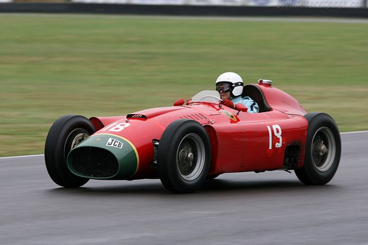

A Fórmula 1 começou em 1950, com Giuseppe Farina vencendo o primeiro campeonato. Nos anos seguintes, Juan Manuel Fangio dominou, conquistando cinco títulos entre 1951 e 1957. A Ferrari teve destaque nos anos de 1952 e 1953 com Alberto Ascari. Durante a década, a Fórmula 1 evoluiu tecnologicamente, com avanços significativos introduzidos por equipes como Mercedes-Benz, que deixou o esporte após a tragédia de Le Mans em 1955. Em 1958, Mike Hawthorn se tornou o primeiro campeão mundial britânico, e o Campeonato Mundial de Construtores foi introduzido, vencido pela Vanwall. A década também viu um aumento na conscientização sobre a segurança, levando a mudanças nas regulamentações. Esta primeira década estabeleceu a Fórmula 1 como o auge do automobilismo, combinando velocidade, inovação e rivalidades intensas.
